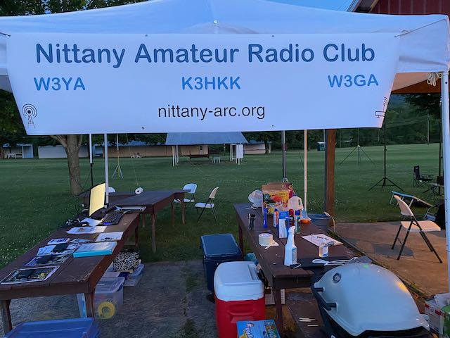
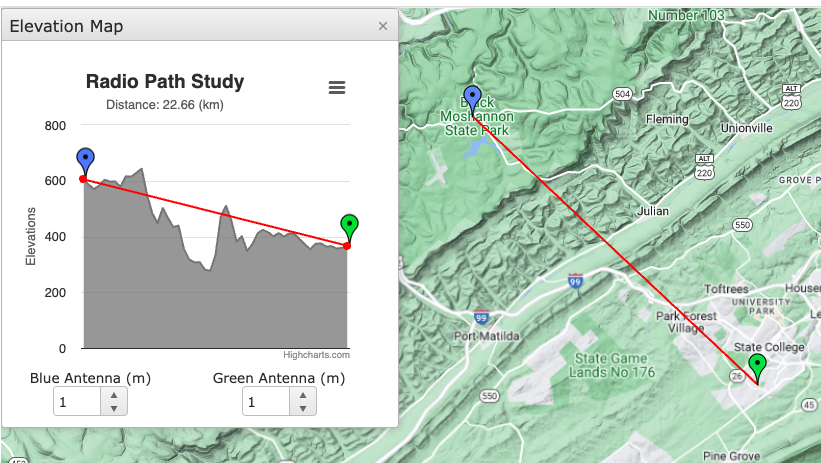
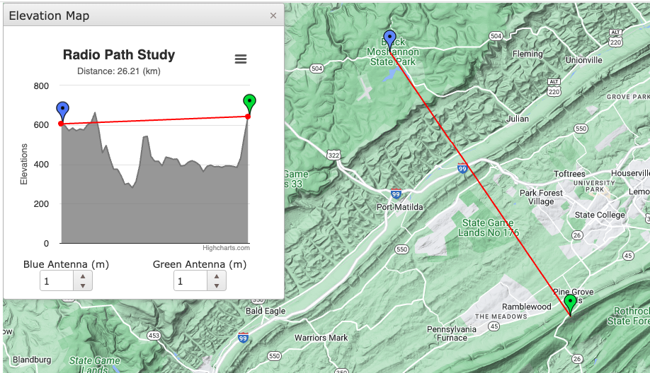
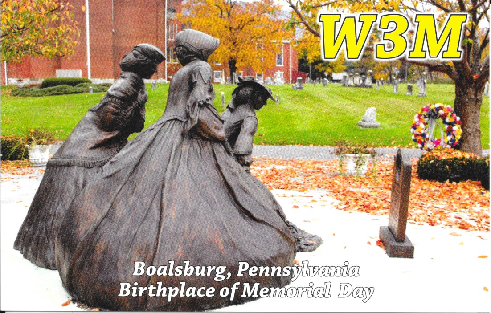
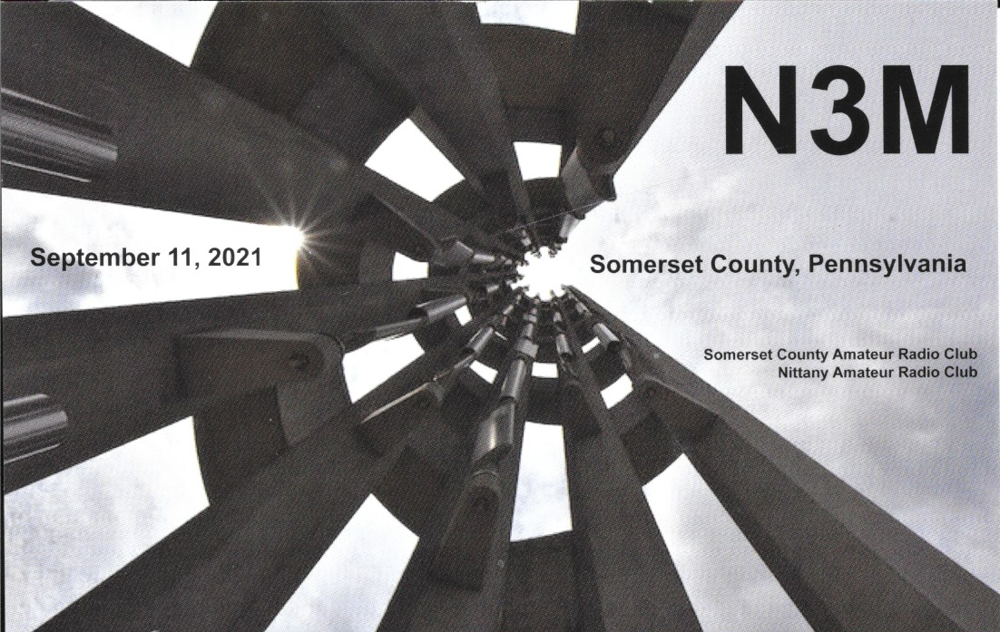
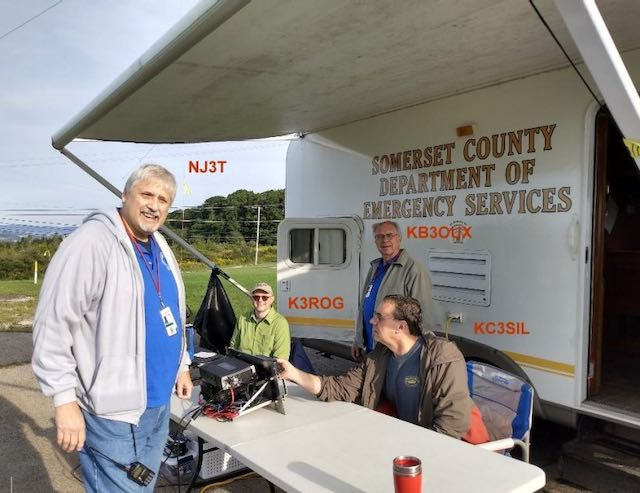
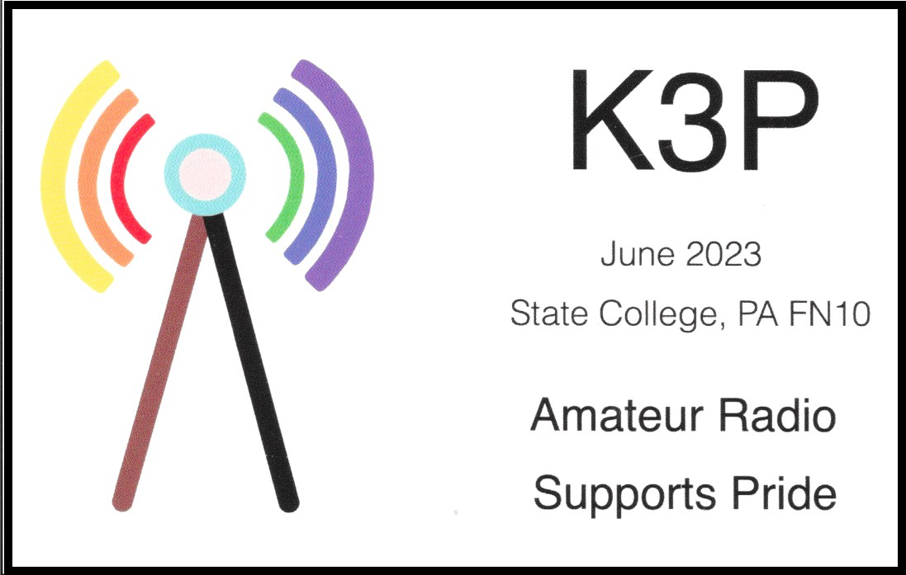

Events
Field Day
For the last several years, I have helped organize the NARC Field Day operation.

In the summer of 2020, during the height of COVID-19 pandemic restrictions, I operated from my backyard.

Winter Field Day
I enjoy Winter Field Day.
In January 2020, W3SWL, N3LI, and I operated Winter Field Day from a cabin in Prince Gallitzin State Park.
In 2021, my wife and I stayed at a cabin in Black Moshannon State Park where I operated Winter Field Day.
In 2022, friends KC3HIP and W3EDP stayed with us in an adjoining cabin at Black Moshannon State Park.
We weren’t able to operate in 2023, but I operated from Black Moshannon State Park in 2024. Gear included the Yaesu FT-891, the RM Italy MLA100 amplifier, and an end-fed halfwave for 80m+. I tried connecting to the W3SWL-10 Winlink node using the “Alaskan” Arrow Antenna and the W3YA-3 packet station, but failed. After returning home, I understood why:


There were no line of sight paths. The Allegheny Front lay between us. Welcome to Pennsylvania.
Jamboree on the Air (JOTA)
With K3YV and W3EDP, I planned an event with local Cub Scout Pack 67 for October 2022. Illness forced a last minute cancellation, but carried out a JOTA activation for October 21, 2023 under the K3J special event callsign. About 15 cubs and their parents joined K3YV, W3EDP, KC3AF, and me at Circleville Park for some HF, VHF repeater, Morse Code, and FRS walkie-talkie fun. We’re looking forward to repeating and expanding the effort in 2024. However, given the cold and blustery weather conditions, we’re looking for an indoor location.
Birthplace of Memorial Day W3M

Flight 93 20th Anniversary N3M

Several hams from NARC cooperated with hams from the Somerset County Amateur Radio club to commemorate the 20th anniversary of Flight 93 from a location near the memorial.

Penn State Dance Marathon K3T
I helped the Penn State ARC secure the special event callsign K3T for an event honoring the Penn State Dance Marathon held in February 2023. The group of operators made several hundred QSOs, spreading positive news about ’Thon, Penn State, and the PSU club.
Pride K3P
With several friends from our local ham community, I organized a special event station to celebrate Pride Month in Central PA in early June 2023. My Allstar/EchoLink node was active, and a group of us did a Parks on the Air (POTA) activation at Bald Eagle State Park. We also had a booth at the State College Pride festival.
